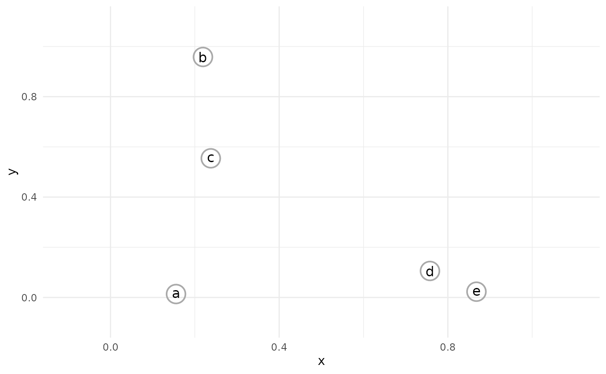
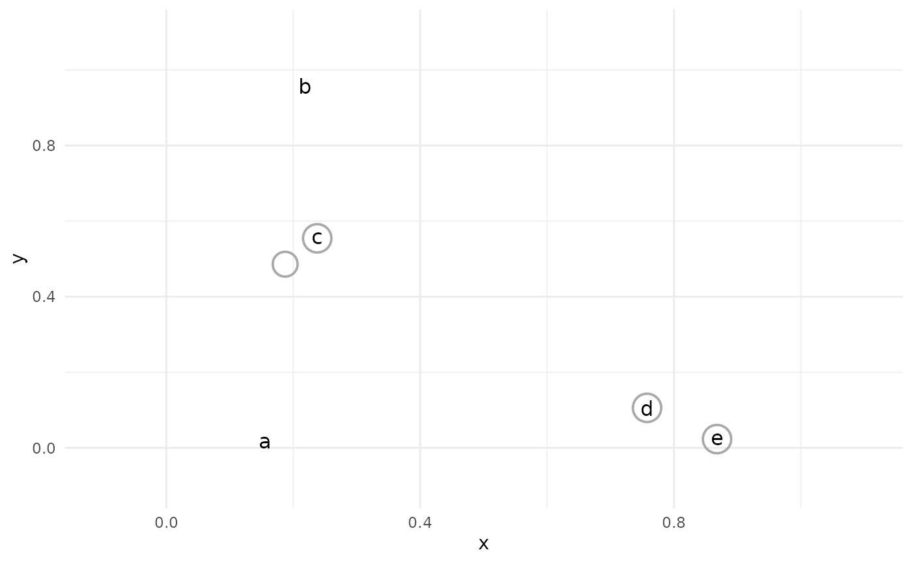

Setup
Load libraries:
library(tidyclust)
#>
#> Attaching package: 'tidyclust'
#> The following objects are masked from 'package:parsnip':
#>
#> knit_engine_docs, list_md_problems
library(tidyverse)
#> ── Attaching core tidyverse packages ────────────────── tidyverse 2.0.0 ──
#> ✔ dplyr 1.1.4 ✔ readr 2.1.5
#> ✔ forcats 1.0.0 ✔ stringr 1.5.1
#> ✔ ggplot2 3.5.1 ✔ tibble 3.2.1
#> ✔ lubridate 1.9.3 ✔ tidyr 1.3.1
#> ✔ purrr 1.0.2
#> ── Conflicts ──────────────────────────────────── tidyverse_conflicts() ──
#> ✖ dplyr::filter() masks stats::filter()
#> ✖ dplyr::lag() masks stats::lag()
#> ℹ Use the conflicted package (<http://conflicted.r-lib.org/>) to force all conflicts to become errors
library(tidymodels)
#> ── Attaching packages ──────────────────────────────── tidymodels 1.2.0 ──
#> ✔ broom 1.0.6 ✔ rsample 1.2.1
#> ✔ dials 1.2.1 ✔ tune 1.2.1
#> ✔ infer 1.0.7 ✔ workflowsets 1.1.0
#> ✔ modeldata 1.3.0 ✔ yardstick 1.3.1
#> ✔ recipes 1.0.10
#> ── Conflicts ─────────────────────────────────── tidymodels_conflicts() ──
#> ✖ scales::discard() masks purrr::discard()
#> ✖ dplyr::filter() masks stats::filter()
#> ✖ recipes::fixed() masks stringr::fixed()
#> ✖ tidyclust::knit_engine_docs() masks parsnip::knit_engine_docs()
#> ✖ dplyr::lag() masks stats::lag()
#> ✖ tidyclust::list_md_problems() masks parsnip::list_md_problems()
#> ✖ yardstick::spec() masks readr::spec()
#> ✖ recipes::step() masks stats::step()
#> • Use tidymodels_prefer() to resolve common conflicts.
set.seed(838383)Load and clean a dataset:
data("penguins", package = "modeldata")
penguins <- penguins %>%
select(bill_length_mm, bill_depth_mm) %>%
drop_na()
# shuffle rows
penguins <- penguins %>%
sample_n(nrow(penguins))If you have not yet read the k_means vignette, we
recommend reading that first; functions that are used in this vignette
are explained in more detail there.
A brief introduction to hierarchical clustering
Hierarchical Clustering, sometimes called Agglomerative Clustering, is a method of unsupervised learning that produces a dendrogram, which can be used to partition observations into clusters.
The hierarchical clustering process begins with each observation in it’s own cluster; i.e., n clusters for n observations.

The closest two observations are then joined together into a single cluster.

This process continues, with the closest two clusters being joined (or “aggolermated”) at each step.

The result of the process is a dendrogram, which shows the joining of clusters in tree form:
#> Warning in dist(fake_dat): NAs introduced by coercionClusters from dendrogram
To produce a partition-style cluster assignment from the dendrogram, one must “cut” the tree at a chosen height:

The observations that remain joined in the dendrogram below the cut height are considered to be in a cluster together:
#> # A tibble: 5 × 2
#> observation cluster_assignment
#> <chr> <int>
#> 1 a 1
#> 2 b 2
#> 3 c 2
#> 4 d 3
#> 5 e 3Methods of aggolmeration
At every step of the agglomeration, we measure distances between current clusters. With each cluster containing (possibly) multiple points, what does it mean to measure distance?
There are four common approaches to cluster-cluster distancing, aka “linkage”:
single linkage: The distance between two clusters is the distance between the two closest observations.
average linkage: The distance between two clusters is the average of all distances between observations in one cluster and observations in the other.
complete linkage: The distance between two clusters is the distance between the two furthest observations.
centroid method: The distance between two clusters is the distance between their centroids (geometric mean or median).
Ward’s method: The distance between two clusters is proportional to the increase in error sum of squares (ESS) that would result from joining them. The ESS is computed as the sum of squared distances between observations in a cluster, and the centroid of the cluster.
It is also worth mentioning the McQuitty method,
which retains information about previously joined clusters to measure
future linkage distance. This method is currently supported for model
fitting, but not for prediction, in tidyclust.
hier_clust specification in {tidyclust}
To specify a hierarchical clustering model in tidyclust,
simply choose a value of num_clusters and (optionally) a
linkage method:
hc_spec <- hier_clust(
num_clusters = 3,
linkage_method = "average"
)
hc_spec
#> Hierarchical Clustering Specification (partition)
#>
#> Main Arguments:
#> num_clusters = 3
#> linkage_method = average
#>
#> Computational engine: statsCurrently, the only supported engine is stats::hclust().
The default linkage
Fitting hier_clust models
We fit the model to data in the usual way:
hc_fit <- hc_spec %>%
fit(~ bill_length_mm + bill_depth_mm,
data = penguins
)
hc_fit %>%
summary()
#> Length Class Mode
#> spec 4 hier_clust list
#> fit 7 hclust list
#> elapsed 1 -none- list
#> preproc 4 -none- listTo produce a dendrogram plot, access the engine fit: (Although as we see below, dendrograms are often not very informative for moderate to large size datasets.)
We can also extract the standard tidyclust summary
list:
hc_summary <- hc_fit %>% extract_fit_summary()
hc_summary %>% str()
#> List of 7
#> $ cluster_names : Factor w/ 3 levels "Cluster_1","Cluster_2",..: 1 2 3
#> $ centroids : tibble [3 × 2] (S3: tbl_df/tbl/data.frame)
#> ..$ bill_length_mm: num [1:3] 38.8 47.9 56.6
#> ..$ bill_depth_mm : num [1:3] 18.3 16.2 16.7
#> $ n_members : int [1:3] 153 184 5
#> $ sse_within_total_total: num [1:3] 378.4 573.9 9.7
#> $ sse_total : num 1803
#> $ orig_labels : NULL
#> $ cluster_assignments : Factor w/ 3 levels "Cluster_1","Cluster_2",..: 1 1 1 2 2 2 2 2 1 2 ...Note that, although the hierarchical clustering algorithm is not focused on cluster centroids in the same way \(k\)-means is, we are still able to compute the geometric mean over the predictors for each cluster:
hc_fit %>% extract_centroids()
#> # A tibble: 3 × 3
#> .cluster bill_length_mm bill_depth_mm
#> <fct> <dbl> <dbl>
#> 1 Cluster_1 38.8 18.3
#> 2 Cluster_2 47.9 16.2
#> 3 Cluster_3 56.6 16.7Prediction
To predict the cluster assignment for a new observation, we find the closest cluster. How we measure “closeness” is dependent on the specified type of linkage in the model:
single linkage: The new observation is assigned to the same cluster as its nearest observation from the training data.
complete linkage: The new observation is assigned to the cluster with the smallest maximum distances between training observations and the new observation.
average linkage: The new observation is assigned to the cluster with the smallest average distances between training observations and the new observation.
centroid method: The new observation is assigned to the cluster with the closest centroid, as in prediction for
k_means.Ward’s method: The new observation is assigned to the cluster with the smallest increase in error sum of squares (ESS) due to the new addition. The ESS is computed as the sum of squared distances between observations in a cluster, and the centroid of the cluster.
hc_preds <- hc_fit %>% predict(penguins)
hc_preds
#> # A tibble: 342 × 1
#> .pred_cluster
#> <fct>
#> 1 Cluster_1
#> 2 Cluster_1
#> 3 Cluster_1
#> 4 Cluster_2
#> 5 Cluster_3
#> 6 Cluster_3
#> 7 Cluster_2
#> 8 Cluster_2
#> 9 Cluster_1
#> 10 Cluster_2
#> # ℹ 332 more rowsIt’s important to note that there is no guarantee that
predict() on the training data will produce the same
results as extract_cluster_assignments(). The process by
which clusters are created during the aggolmerations results in a
particular partition; but if a training observation is treated as new
data, it is predicted in the same manner as truly new information.
bind_cols(
hc_preds,
extract_cluster_assignment(hc_fit)
)
#> # A tibble: 342 × 2
#> .pred_cluster .cluster
#> <fct> <fct>
#> 1 Cluster_1 Cluster_1
#> 2 Cluster_1 Cluster_1
#> 3 Cluster_1 Cluster_1
#> 4 Cluster_2 Cluster_2
#> 5 Cluster_3 Cluster_2
#> 6 Cluster_3 Cluster_2
#> 7 Cluster_2 Cluster_2
#> 8 Cluster_2 Cluster_2
#> 9 Cluster_1 Cluster_1
#> 10 Cluster_2 Cluster_2
#> # ℹ 332 more rowsReconciling partitions
Suppose we have produced cluster assignments from two models: a hierarchical clustering model with three clusters (as above) and a \(k\)-means clustering model with five clusters (below). How can we combine these assignments?
km_spec <- k_means(num_clusters = 5)
km_fit <- km_spec %>%
fit(~., data = penguins)
km_preds <- predict(km_fit, penguins, prefix = "KM_")
hc_preds <- predict(hc_fit, penguins, prefix = "HC_")We notice that the three-cluster assignments from
hier_clust do not line up perfectly with the five-cluster
assignments from k_means.
tibble(
hc = hc_preds$.pred_cluster,
km = km_preds$.pred_cluster
) %>%
count(hc, km)
#> # A tibble: 8 × 3
#> hc km n
#> <fct> <fct> <int>
#> 1 HC_1 KM_1 80
#> 2 HC_1 KM_2 72
#> 3 HC_1 KM_3 3
#> 4 HC_1 KM_5 1
#> 5 HC_2 KM_3 28
#> 6 HC_2 KM_4 64
#> 7 HC_2 KM_5 76
#> 8 HC_3 KM_4 18However, they are not fully unrelated assignments. For example, all
of KM_2 in the \(k\)-means
assignment fell inside HC_1 for the hierarchical
assignments.
Our goal is to relabel the five \(k\)-means clusters to match the three
cluster names in the hierarchical output. This can be accomplished with
reconcile_clusterings_mapping().
This function expects two vectors of cluster labels as input. The first is the label that will be matched, and the second is the label that will be recoded to the first.
If we are not trying to simply match names across two same-size
clusterings, the option one_to_one must be set to
FALSE.
reconcile_clusterings_mapping(
primary = hc_preds$.pred_cluster,
alternative = km_preds$.pred_cluster,
one_to_one = FALSE
)
#> # A tibble: 342 × 3
#> primary alt alt_recoded
#> <fct> <fct> <chr>
#> 1 HC_1 KM_1 HC_1
#> 2 HC_1 KM_2 HC_1
#> 3 HC_1 KM_2 HC_1
#> 4 HC_2 KM_3 HC_2
#> 5 HC_3 KM_4 HC_2
#> 6 HC_3 KM_4 HC_2
#> 7 HC_2 KM_3 HC_2
#> 8 HC_2 KM_5 HC_2
#> 9 HC_1 KM_2 HC_1
#> 10 HC_2 KM_4 HC_2
#> # ℹ 332 more rowsIn this example, we can see that KM_1,
KM_2, KM_5 have been matched to
HC_1; and KM_3 and KM_4 have been
matched to HC_2. Notice that no clusters from the
KM set were matched to HC_3; evidently, this
is a small cluster that did not manifest clearly in the \(k\)-means clustering.